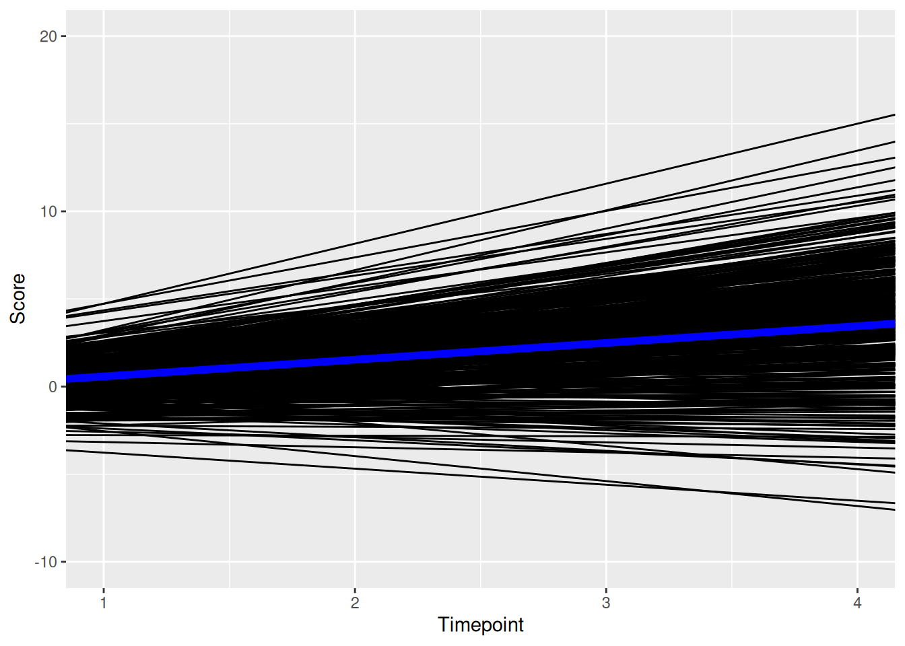

Structural Equation Modeling
1 Preamble
1.1 Install Libraries
#install.packages("remotes")
#remotes::install_git("https://research-git.uiowa.edu/PetersenLab/petersenlab.git")1.2 Load Libraries
library("lavaan")
library("semTools")
library("semPlot")
library("lcsm")2 Simulate Data
set.seed(52242)
X <- rnorm(100)
M <- 0.5*X + rnorm(100)
Y <- 0.7*M + rnorm(100)
mydata <- data.frame(X = X, Y = Y, M = M)3 Import data
5 Analysis examples
https://isaactpetersen.github.io/Principles-Psychological-Assessment/sem.html#semModelExample-sem
6 Latent Growth Curve Model
6.1 Model Syntax
6.1.1 Abbreviated
lgcm1_syntax <- '
# Intercept and slope
intercept =~ 1*t1 + 1*t2 + 1*t3 + 1*t4
slope =~ 0*t1 + 1*t2 + 2*t3 + 3*t4
# Regression paths
intercept ~ x1 + x2
slope ~ x1 + x2
# Time-varying covariates
t1 ~ c1
t2 ~ c2
t3 ~ c3
t4 ~ c4
'6.1.2 Full
lgcm2_syntax <- '
# Intercept and slope
intercept =~ 1*t1 + 1*t2 + 1*t3 + 1*t4
slope =~ 0*t1 + 1*t2 + 2*t3 + 3*t4
# Regression paths
intercept ~ x1 + x2
slope ~ x1 + x2
# Time-varying covariates
t1 ~ c1
t2 ~ c2
t3 ~ c3
t4 ~ c4
# Constrain observed intercepts to zero
t1 ~ 0
t2 ~ 0
t3 ~ 0
t4 ~ 0
# Estimate mean of intercept and slope
intercept ~ 1
slope ~ 1
'6.2 Fit the Model
6.2.1 Abbreviated
lgcm1_fit <- growth(
lgcm1_syntax,
data = Demo.growth,
missing = "ML",
estimator = "MLR",
meanstructure = TRUE,
int.ov.free = FALSE,
int.lv.free = TRUE,
fixed.x = FALSE,
em.h1.iter.max = 100000)Warning in lav_partable_check(lavpartable, categorical = lavoptions$.categorical, : lavaan WARNING: automatically added intercepts are set to zero:
[x1 x2 c1 c2 c3 c4]6.2.2 Full
lgcm2_fit <- sem(
lgcm2_syntax,
data = Demo.growth,
missing = "ML",
estimator = "MLR",
meanstructure = TRUE,
fixed.x = FALSE,
em.h1.iter.max = 100000)6.3 Summary Output
6.3.1 Abbreviated
summary(
lgcm1_fit,
fit.measures = TRUE,
standardized = TRUE,
rsquare = TRUE)lavaan 0.6-12 ended normally after 32 iterations
Estimator ML
Optimization method NLMINB
Number of model parameters 38
Number of observations 400
Number of missing patterns 1
Model Test User Model:
Standard Robust
Test Statistic 40.774 40.982
Degrees of freedom 27 27
P-value (Chi-square) 0.043 0.041
Scaling correction factor 0.995
Yuan-Bentler correction (Mplus variant)
Model Test Baseline Model:
Test statistic 2345.885 2414.540
Degrees of freedom 30 30
P-value 0.000 0.000
Scaling correction factor 0.972
User Model versus Baseline Model:
Comparative Fit Index (CFI) 0.994 0.994
Tucker-Lewis Index (TLI) 0.993 0.993
Robust Comparative Fit Index (CFI) 0.994
Robust Tucker-Lewis Index (TLI) 0.993
Loglikelihood and Information Criteria:
Loglikelihood user model (H0) -5782.507 -5782.507
Scaling correction factor 0.991
for the MLR correction
Loglikelihood unrestricted model (H1) -5762.120 -5762.120
Scaling correction factor 0.993
for the MLR correction
Akaike (AIC) 11641.014 11641.014
Bayesian (BIC) 11792.690 11792.690
Sample-size adjusted Bayesian (BIC) 11672.114 11672.114
Root Mean Square Error of Approximation:
RMSEA 0.036 0.036
90 Percent confidence interval - lower 0.006 0.007
90 Percent confidence interval - upper 0.057 0.057
P-value RMSEA <= 0.05 0.854 0.849
Robust RMSEA 0.036
90 Percent confidence interval - lower 0.007
90 Percent confidence interval - upper 0.057
Standardized Root Mean Square Residual:
SRMR 0.030 0.030
Parameter Estimates:
Standard errors Sandwich
Information bread Observed
Observed information based on Hessian
Latent Variables:
Estimate Std.Err z-value P(>|z|) Std.lv Std.all
intercept =~
t1 1.000 1.386 0.875
t2 1.000 1.386 0.660
t3 1.000 1.386 0.507
t4 1.000 1.386 0.411
slope =~
t1 0.000 0.000 0.000
t2 1.000 0.769 0.366
t3 2.000 1.539 0.562
t4 3.000 2.308 0.685
Regressions:
Estimate Std.Err z-value P(>|z|) Std.lv Std.all
intercept ~
x1 0.608 0.059 10.275 0.000 0.439 0.453
x2 0.604 0.062 9.776 0.000 0.436 0.423
slope ~
x1 0.262 0.029 8.968 0.000 0.341 0.352
x2 0.522 0.032 16.302 0.000 0.678 0.658
t1 ~
c1 0.143 0.045 3.198 0.001 0.143 0.089
t2 ~
c2 0.289 0.047 6.215 0.000 0.289 0.131
t3 ~
c3 0.328 0.047 7.011 0.000 0.328 0.112
t4 ~
c4 0.330 0.057 5.814 0.000 0.330 0.090
Covariances:
Estimate Std.Err z-value P(>|z|) Std.lv Std.all
.intercept ~~
.slope 0.075 0.040 1.890 0.059 0.152 0.152
x1 ~~
x2 0.141 0.050 2.798 0.005 0.141 0.140
c1 -0.039 0.051 -0.762 0.446 -0.039 -0.038
c2 0.023 0.048 0.493 0.622 0.023 0.024
c3 0.027 0.050 0.544 0.586 0.027 0.028
c4 -0.023 0.045 -0.519 0.604 -0.023 -0.024
x2 ~~
c1 -0.018 0.050 -0.358 0.721 -0.018 -0.019
c2 -0.003 0.044 -0.075 0.940 -0.003 -0.004
c3 0.155 0.048 3.239 0.001 0.155 0.170
c4 -0.104 0.043 -2.421 0.015 -0.104 -0.116
c1 ~~
c2 0.080 0.045 1.793 0.073 0.080 0.086
c3 -0.030 0.050 -0.585 0.559 -0.030 -0.032
c4 0.127 0.048 2.668 0.008 0.127 0.140
c2 ~~
c3 0.003 0.041 0.078 0.938 0.003 0.004
c4 0.031 0.044 0.715 0.475 0.031 0.036
c3 ~~
c4 0.034 0.044 0.767 0.443 0.034 0.039
Intercepts:
Estimate Std.Err z-value P(>|z|) Std.lv Std.all
.t1 0.000 0.000 0.000
.t2 0.000 0.000 0.000
.t3 0.000 0.000 0.000
.t4 0.000 0.000 0.000
x1 0.000 0.000 0.000
x2 0.000 0.000 0.000
c1 0.000 0.000 0.000
c2 0.000 0.000 0.000
c3 0.000 0.000 0.000
c4 0.000 0.000 0.000
.intercept 0.580 0.061 9.501 0.000 0.419 0.419
.slope 0.958 0.030 32.177 0.000 1.244 1.244
Variances:
Estimate Std.Err z-value P(>|z|) Std.lv Std.all
.t1 0.580 0.091 6.386 0.000 0.580 0.231
.t2 0.596 0.056 10.627 0.000 0.596 0.135
.t3 0.481 0.051 9.434 0.000 0.481 0.064
.t4 0.535 0.094 5.709 0.000 0.535 0.047
.intercept 1.079 0.108 9.996 0.000 0.562 0.562
.slope 0.224 0.027 8.373 0.000 0.378 0.378
x1 1.064 0.068 15.614 0.000 1.064 1.000
x2 0.943 0.065 14.401 0.000 0.943 1.000
c1 0.972 0.064 15.306 0.000 0.972 1.000
c2 0.900 0.063 14.372 0.000 0.900 1.000
c3 0.876 0.067 13.041 0.000 0.876 1.000
c4 0.852 0.057 15.005 0.000 0.852 1.000
R-Square:
Estimate
t1 0.769
t2 0.865
t3 0.936
t4 0.953
intercept 0.438
slope 0.6226.3.2 Full
summary(
lgcm2_fit,
fit.measures = TRUE,
standardized = TRUE,
rsquare = TRUE)lavaan 0.6-12 ended normally after 31 iterations
Estimator ML
Optimization method NLMINB
Number of model parameters 44
Number of observations 400
Number of missing patterns 1
Model Test User Model:
Standard Robust
Test Statistic 26.059 26.344
Degrees of freedom 21 21
P-value (Chi-square) 0.204 0.194
Scaling correction factor 0.989
Yuan-Bentler correction (Mplus variant)
Model Test Baseline Model:
Test statistic 2345.885 2414.540
Degrees of freedom 30 30
P-value 0.000 0.000
Scaling correction factor 0.972
User Model versus Baseline Model:
Comparative Fit Index (CFI) 0.998 0.998
Tucker-Lewis Index (TLI) 0.997 0.997
Robust Comparative Fit Index (CFI) 0.998
Robust Tucker-Lewis Index (TLI) 0.997
Loglikelihood and Information Criteria:
Loglikelihood user model (H0) -5775.149 -5775.149
Scaling correction factor 0.994
for the MLR correction
Loglikelihood unrestricted model (H1) -5762.120 -5762.120
Scaling correction factor 0.993
for the MLR correction
Akaike (AIC) 11638.299 11638.299
Bayesian (BIC) 11813.923 11813.923
Sample-size adjusted Bayesian (BIC) 11674.308 11674.308
Root Mean Square Error of Approximation:
RMSEA 0.025 0.025
90 Percent confidence interval - lower 0.000 0.000
90 Percent confidence interval - upper 0.051 0.052
P-value RMSEA <= 0.05 0.938 0.933
Robust RMSEA 0.025
90 Percent confidence interval - lower 0.000
90 Percent confidence interval - upper 0.052
Standardized Root Mean Square Residual:
SRMR 0.014 0.014
Parameter Estimates:
Standard errors Sandwich
Information bread Observed
Observed information based on Hessian
Latent Variables:
Estimate Std.Err z-value P(>|z|) Std.lv Std.all
intercept =~
t1 1.000 1.386 0.875
t2 1.000 1.386 0.660
t3 1.000 1.386 0.507
t4 1.000 1.386 0.412
slope =~
t1 0.000 0.000 0.000
t2 1.000 0.768 0.366
t3 2.000 1.536 0.562
t4 3.000 2.304 0.684
Regressions:
Estimate Std.Err z-value P(>|z|) Std.lv Std.all
intercept ~
x1 0.608 0.059 10.275 0.000 0.439 0.451
x2 0.604 0.062 9.776 0.000 0.436 0.419
slope ~
x1 0.262 0.029 8.968 0.000 0.341 0.351
x2 0.522 0.032 16.301 0.000 0.679 0.653
t1 ~
c1 0.143 0.045 3.198 0.001 0.143 0.089
t2 ~
c2 0.289 0.047 6.215 0.000 0.289 0.131
t3 ~
c3 0.328 0.047 7.011 0.000 0.328 0.112
t4 ~
c4 0.330 0.057 5.814 0.000 0.330 0.091
Covariances:
Estimate Std.Err z-value P(>|z|) Std.lv Std.all
.intercept ~~
.slope 0.075 0.040 1.890 0.059 0.152 0.152
x1 ~~
x2 0.153 0.049 3.129 0.002 0.153 0.155
c1 -0.038 0.050 -0.760 0.447 -0.038 -0.037
c2 0.026 0.048 0.547 0.585 0.026 0.027
c3 0.033 0.049 0.674 0.501 0.033 0.035
c4 -0.025 0.044 -0.560 0.575 -0.025 -0.026
x2 ~~
c1 -0.019 0.050 -0.377 0.706 -0.019 -0.020
c2 -0.007 0.044 -0.167 0.867 -0.007 -0.008
c3 0.145 0.048 3.055 0.002 0.145 0.162
c4 -0.102 0.043 -2.371 0.018 -0.102 -0.115
c1 ~~
c2 0.080 0.045 1.789 0.074 0.080 0.085
c3 -0.030 0.050 -0.596 0.551 -0.030 -0.033
c4 0.128 0.048 2.669 0.008 0.128 0.140
c2 ~~
c3 0.001 0.042 0.030 0.976 0.001 0.001
c4 0.032 0.044 0.729 0.466 0.032 0.036
c3 ~~
c4 0.035 0.044 0.796 0.426 0.035 0.041
Intercepts:
Estimate Std.Err z-value P(>|z|) Std.lv Std.all
.t1 0.000 0.000 0.000
.t2 0.000 0.000 0.000
.t3 0.000 0.000 0.000
.t4 0.000 0.000 0.000
.intercept 0.580 0.061 9.501 0.000 0.419 0.419
.slope 0.958 0.030 32.177 0.000 1.247 1.247
x1 -0.092 0.051 -1.793 0.073 -0.092 -0.090
x2 0.138 0.048 2.878 0.004 0.138 0.144
c1 0.008 0.049 0.158 0.874 0.008 0.008
c2 0.029 0.047 0.610 0.542 0.029 0.031
c3 0.068 0.047 1.449 0.147 0.068 0.072
c4 -0.018 0.046 -0.390 0.696 -0.018 -0.020
Variances:
Estimate Std.Err z-value P(>|z|) Std.lv Std.all
.t1 0.580 0.091 6.386 0.000 0.580 0.231
.t2 0.596 0.056 10.627 0.000 0.596 0.135
.t3 0.481 0.051 9.434 0.000 0.481 0.064
.t4 0.535 0.094 5.709 0.000 0.535 0.047
.intercept 1.079 0.108 9.996 0.000 0.562 0.562
.slope 0.224 0.027 8.373 0.000 0.379 0.379
x1 1.056 0.068 15.511 0.000 1.056 1.000
x2 0.924 0.065 14.153 0.000 0.924 1.000
c1 0.972 0.063 15.321 0.000 0.972 1.000
c2 0.899 0.062 14.432 0.000 0.899 1.000
c3 0.872 0.067 13.018 0.000 0.872 1.000
c4 0.851 0.057 15.001 0.000 0.851 1.000
R-Square:
Estimate
t1 0.769
t2 0.865
t3 0.936
t4 0.953
intercept 0.438
slope 0.6216.4 Estimates of Model Fit
fitMeasures(
lgcm_fit,
fit.measures = c(
"chisq", "df", "pvalue",
"chisq.scaled", "df.scaled", "pvalue.scaled",
"chisq.scaling.factor",
"baseline.chisq","baseline.df","baseline.pvalue",
"rmsea", "cfi", "tli", "srmr",
"rmsea.robust", "cfi.robust", "tli.robust"))Error in h(simpleError(msg, call)): error in evaluating the argument 'object' in selecting a method for function 'fitMeasures': object 'lgcm_fit' not found6.5 Residuals
residuals(
lgcm_fit,
type = "cor")Error in h(simpleError(msg, call)): error in evaluating the argument 'object' in selecting a method for function 'residuals': object 'lgcm_fit' not found6.6 Modification Indices
modificationindices(
lgcm_fit,
sort. = TRUE)Error in modificationindices(lgcm_fit, sort. = TRUE): object 'lgcm_fit' not found6.7 Internal Consistency Reliability
compRelSEM(lgcm_fit)Error in lavInspect(object, "ngroups"): object 'lgcm_fit' not found6.8 Path Diagram
semPaths(
lgcm_fit,
what = "Std.all",
layout = "tree2",
edge.label.cex = 1.5)Error in "semPlotModel" %in% class(object): object 'lgcm_fit' not found7 Latent Change Score Model
7.1 Model Syntax
bivariateLCSM_syntax <- specify_bi_lcsm(
timepoints = 10,
var_x = "x",
model_x = list(
alpha_constant = TRUE,
beta = TRUE,
phi = TRUE),
var_y = "y",
model_y = list(
alpha_constant = TRUE,
beta = TRUE,
phi = TRUE),
coupling = list(
delta_lag_xy = TRUE,
delta_lag_yx = TRUE),
change_letter_x = "g",
change_letter_y = "j")
cat(bivariateLCSM_syntax)# # # # # # # # # # # # # # # # # # # # #
# Specify parameters for construct x ----
# # # # # # # # # # # # # # # # # # # # #
# Specify latent true scores
lx1 =~ 1 * x1
lx2 =~ 1 * x2
lx3 =~ 1 * x3
lx4 =~ 1 * x4
lx5 =~ 1 * x5
lx6 =~ 1 * x6
lx7 =~ 1 * x7
lx8 =~ 1 * x8
lx9 =~ 1 * x9
lx10 =~ 1 * x10
# Specify mean of latent true scores
lx1 ~ gamma_lx1 * 1
lx2 ~ 0 * 1
lx3 ~ 0 * 1
lx4 ~ 0 * 1
lx5 ~ 0 * 1
lx6 ~ 0 * 1
lx7 ~ 0 * 1
lx8 ~ 0 * 1
lx9 ~ 0 * 1
lx10 ~ 0 * 1
# Specify variance of latent true scores
lx1 ~~ sigma2_lx1 * lx1
lx2 ~~ 0 * lx2
lx3 ~~ 0 * lx3
lx4 ~~ 0 * lx4
lx5 ~~ 0 * lx5
lx6 ~~ 0 * lx6
lx7 ~~ 0 * lx7
lx8 ~~ 0 * lx8
lx9 ~~ 0 * lx9
lx10 ~~ 0 * lx10
# Specify intercept of obseved scores
x1 ~ 0 * 1
x2 ~ 0 * 1
x3 ~ 0 * 1
x4 ~ 0 * 1
x5 ~ 0 * 1
x6 ~ 0 * 1
x7 ~ 0 * 1
x8 ~ 0 * 1
x9 ~ 0 * 1
x10 ~ 0 * 1
# Specify variance of observed scores
x1 ~~ sigma2_ux * x1
x2 ~~ sigma2_ux * x2
x3 ~~ sigma2_ux * x3
x4 ~~ sigma2_ux * x4
x5 ~~ sigma2_ux * x5
x6 ~~ sigma2_ux * x6
x7 ~~ sigma2_ux * x7
x8 ~~ sigma2_ux * x8
x9 ~~ sigma2_ux * x9
x10 ~~ sigma2_ux * x10
# Specify autoregressions of latent variables
lx2 ~ 1 * lx1
lx3 ~ 1 * lx2
lx4 ~ 1 * lx3
lx5 ~ 1 * lx4
lx6 ~ 1 * lx5
lx7 ~ 1 * lx6
lx8 ~ 1 * lx7
lx9 ~ 1 * lx8
lx10 ~ 1 * lx9
# Specify latent change scores
dx2 =~ 1 * lx2
dx3 =~ 1 * lx3
dx4 =~ 1 * lx4
dx5 =~ 1 * lx5
dx6 =~ 1 * lx6
dx7 =~ 1 * lx7
dx8 =~ 1 * lx8
dx9 =~ 1 * lx9
dx10 =~ 1 * lx10
# Specify latent change scores means
dx2 ~ 0 * 1
dx3 ~ 0 * 1
dx4 ~ 0 * 1
dx5 ~ 0 * 1
dx6 ~ 0 * 1
dx7 ~ 0 * 1
dx8 ~ 0 * 1
dx9 ~ 0 * 1
dx10 ~ 0 * 1
# Specify latent change scores variances
dx2 ~~ 0 * dx2
dx3 ~~ 0 * dx3
dx4 ~~ 0 * dx4
dx5 ~~ 0 * dx5
dx6 ~~ 0 * dx6
dx7 ~~ 0 * dx7
dx8 ~~ 0 * dx8
dx9 ~~ 0 * dx9
dx10 ~~ 0 * dx10
# Specify constant change factor
g2 =~ 1 * dx2 + 1 * dx3 + 1 * dx4 + 1 * dx5 + 1 * dx6 + 1 * dx7 + 1 * dx8 + 1 * dx9 + 1 * dx10
# Specify constant change factor mean
g2 ~ alpha_g2 * 1
# Specify constant change factor variance
g2 ~~ sigma2_g2 * g2
# Specify constant change factor covariance with the initial true score
g2 ~~ sigma_g2lx1 * lx1
# Specify proportional change component
dx2 ~ beta_x * lx1
dx3 ~ beta_x * lx2
dx4 ~ beta_x * lx3
dx5 ~ beta_x * lx4
dx6 ~ beta_x * lx5
dx7 ~ beta_x * lx6
dx8 ~ beta_x * lx7
dx9 ~ beta_x * lx8
dx10 ~ beta_x * lx9
# Specify autoregression of change score
dx3 ~ phi_x * dx2
dx4 ~ phi_x * dx3
dx5 ~ phi_x * dx4
dx6 ~ phi_x * dx5
dx7 ~ phi_x * dx6
dx8 ~ phi_x * dx7
dx9 ~ phi_x * dx8
dx10 ~ phi_x * dx9
# # # # # # # # # # # # # # # # # # # # #
# Specify parameters for construct y ----
# # # # # # # # # # # # # # # # # # # # #
# Specify latent true scores
ly1 =~ 1 * y1
ly2 =~ 1 * y2
ly3 =~ 1 * y3
ly4 =~ 1 * y4
ly5 =~ 1 * y5
ly6 =~ 1 * y6
ly7 =~ 1 * y7
ly8 =~ 1 * y8
ly9 =~ 1 * y9
ly10 =~ 1 * y10
# Specify mean of latent true scores
ly1 ~ gamma_ly1 * 1
ly2 ~ 0 * 1
ly3 ~ 0 * 1
ly4 ~ 0 * 1
ly5 ~ 0 * 1
ly6 ~ 0 * 1
ly7 ~ 0 * 1
ly8 ~ 0 * 1
ly9 ~ 0 * 1
ly10 ~ 0 * 1
# Specify variance of latent true scores
ly1 ~~ sigma2_ly1 * ly1
ly2 ~~ 0 * ly2
ly3 ~~ 0 * ly3
ly4 ~~ 0 * ly4
ly5 ~~ 0 * ly5
ly6 ~~ 0 * ly6
ly7 ~~ 0 * ly7
ly8 ~~ 0 * ly8
ly9 ~~ 0 * ly9
ly10 ~~ 0 * ly10
# Specify intercept of obseved scores
y1 ~ 0 * 1
y2 ~ 0 * 1
y3 ~ 0 * 1
y4 ~ 0 * 1
y5 ~ 0 * 1
y6 ~ 0 * 1
y7 ~ 0 * 1
y8 ~ 0 * 1
y9 ~ 0 * 1
y10 ~ 0 * 1
# Specify variance of observed scores
y1 ~~ sigma2_uy * y1
y2 ~~ sigma2_uy * y2
y3 ~~ sigma2_uy * y3
y4 ~~ sigma2_uy * y4
y5 ~~ sigma2_uy * y5
y6 ~~ sigma2_uy * y6
y7 ~~ sigma2_uy * y7
y8 ~~ sigma2_uy * y8
y9 ~~ sigma2_uy * y9
y10 ~~ sigma2_uy * y10
# Specify autoregressions of latent variables
ly2 ~ 1 * ly1
ly3 ~ 1 * ly2
ly4 ~ 1 * ly3
ly5 ~ 1 * ly4
ly6 ~ 1 * ly5
ly7 ~ 1 * ly6
ly8 ~ 1 * ly7
ly9 ~ 1 * ly8
ly10 ~ 1 * ly9
# Specify latent change scores
dy2 =~ 1 * ly2
dy3 =~ 1 * ly3
dy4 =~ 1 * ly4
dy5 =~ 1 * ly5
dy6 =~ 1 * ly6
dy7 =~ 1 * ly7
dy8 =~ 1 * ly8
dy9 =~ 1 * ly9
dy10 =~ 1 * ly10
# Specify latent change scores means
dy2 ~ 0 * 1
dy3 ~ 0 * 1
dy4 ~ 0 * 1
dy5 ~ 0 * 1
dy6 ~ 0 * 1
dy7 ~ 0 * 1
dy8 ~ 0 * 1
dy9 ~ 0 * 1
dy10 ~ 0 * 1
# Specify latent change scores variances
dy2 ~~ 0 * dy2
dy3 ~~ 0 * dy3
dy4 ~~ 0 * dy4
dy5 ~~ 0 * dy5
dy6 ~~ 0 * dy6
dy7 ~~ 0 * dy7
dy8 ~~ 0 * dy8
dy9 ~~ 0 * dy9
dy10 ~~ 0 * dy10
# Specify constant change factor
j2 =~ 1 * dy2 + 1 * dy3 + 1 * dy4 + 1 * dy5 + 1 * dy6 + 1 * dy7 + 1 * dy8 + 1 * dy9 + 1 * dy10
# Specify constant change factor mean
j2 ~ alpha_j2 * 1
# Specify constant change factor variance
j2 ~~ sigma2_j2 * j2
# Specify constant change factor covariance with the initial true score
j2 ~~ sigma_j2ly1 * ly1
# Specify proportional change component
dy2 ~ beta_y * ly1
dy3 ~ beta_y * ly2
dy4 ~ beta_y * ly3
dy5 ~ beta_y * ly4
dy6 ~ beta_y * ly5
dy7 ~ beta_y * ly6
dy8 ~ beta_y * ly7
dy9 ~ beta_y * ly8
dy10 ~ beta_y * ly9
# Specify autoregression of change score
dy3 ~ phi_y * dy2
dy4 ~ phi_y * dy3
dy5 ~ phi_y * dy4
dy6 ~ phi_y * dy5
dy7 ~ phi_y * dy6
dy8 ~ phi_y * dy7
dy9 ~ phi_y * dy8
dy10 ~ phi_y * dy9
# Specify residual covariances
x1 ~~ sigma_su * y1
x2 ~~ sigma_su * y2
x3 ~~ sigma_su * y3
x4 ~~ sigma_su * y4
x5 ~~ sigma_su * y5
x6 ~~ sigma_su * y6
x7 ~~ sigma_su * y7
x8 ~~ sigma_su * y8
x9 ~~ sigma_su * y9
x10 ~~ sigma_su * y10
# # # # # # # # # # # # # # # # # # # # # # # # # # # # # # # # # # # # # # # # # # # # # # # # # # # # # # # # # # # # # # # #
# Specify covariances betweeen specified change components (alpha) and intercepts (initial latent true scores lx1 and ly1) ----
# # # # # # # # # # # # # # # # # # # # # # # # # # # # # # # # # # # # # # # # # # # # # # # # # # # # # # # # # # # # # # # #
# Specify covariance of intercepts
lx1 ~~ sigma_ly1lx1 * ly1
# Specify covariance of constant change and intercept between constructs
ly1 ~~ sigma_g2ly1 * g2
# Specify covariance of constant change and intercept between constructs
lx1 ~~ sigma_j2lx1 * j2
# Specify covariance of constant change factors between constructs
g2 ~~ sigma_j2g2 * j2
# # # # # # # # # # # # # # # # # # # # # # # # # # #
# Specify between-construct coupling parameters ----
# # # # # # # # # # # # # # # # # # # # # # # # # # #
# Change score x (t) is determined by true score y (t-1)
dx2 ~ delta_lag_xy * ly1
dx3 ~ delta_lag_xy * ly2
dx4 ~ delta_lag_xy * ly3
dx5 ~ delta_lag_xy * ly4
dx6 ~ delta_lag_xy * ly5
dx7 ~ delta_lag_xy * ly6
dx8 ~ delta_lag_xy * ly7
dx9 ~ delta_lag_xy * ly8
dx10 ~ delta_lag_xy * ly9
# Change score y (t) is determined by true score x (t-1)
dy2 ~ delta_lag_yx * lx1
dy3 ~ delta_lag_yx * lx2
dy4 ~ delta_lag_yx * lx3
dy5 ~ delta_lag_yx * lx4
dy6 ~ delta_lag_yx * lx5
dy7 ~ delta_lag_yx * lx6
dy8 ~ delta_lag_yx * lx7
dy9 ~ delta_lag_yx * lx8
dy10 ~ delta_lag_yx * lx9 7.2 Fit the Model
bivariateLCSM_fit <- fit_bi_lcsm(
data = data_bi_lcsm,
var_x = names(data_bi_lcsm)[2:4],
var_y = names(data_bi_lcsm)[12:14],
model_x = list(
alpha_constant = TRUE,
beta = TRUE,
phi = FALSE),
model_y = list(
alpha_constant = TRUE,
beta = TRUE,
phi = TRUE),
coupling = list(
delta_lag_xy = TRUE,
xi_lag_yx = TRUE)
)Warning in lav_model_vcov(lavmodel = lavmodel, lavsamplestats = lavsamplestats, : lavaan WARNING:
The variance-covariance matrix of the estimated parameters (vcov)
does not appear to be positive definite! The smallest eigenvalue
(= 3.018389e-16) is close to zero. This may be a symptom that the
model is not identified.7.3 Summary Output
summary(
bivariateLCSM_fit,
fit.measures = TRUE,
standardized = TRUE,
rsquare = TRUE)lavaan 0.6-12 ended normally after 138 iterations
Estimator ML
Optimization method NLMINB
Number of model parameters 31
Number of equality constraints 9
Number of observations 500
Number of missing patterns 23
Model Test User Model:
Standard Robust
Test Statistic 6.870 5.971
Degrees of freedom 5 5
P-value (Chi-square) 0.230 0.309
Scaling correction factor 1.151
Yuan-Bentler correction (Mplus variant)
Model Test Baseline Model:
Test statistic 1435.712 1483.655
Degrees of freedom 15 15
P-value 0.000 0.000
Scaling correction factor 0.968
User Model versus Baseline Model:
Comparative Fit Index (CFI) 0.999 0.999
Tucker-Lewis Index (TLI) 0.996 0.998
Robust Comparative Fit Index (CFI) 0.999
Robust Tucker-Lewis Index (TLI) 0.998
Loglikelihood and Information Criteria:
Loglikelihood user model (H0) -2973.817 -2973.817
Scaling correction factor 0.660
for the MLR correction
Loglikelihood unrestricted model (H1) -2970.382 -2970.382
Scaling correction factor 0.971
for the MLR correction
Akaike (AIC) 5991.634 5991.634
Bayesian (BIC) 6084.355 6084.355
Sample-size adjusted Bayesian (BIC) 6014.526 6014.526
Root Mean Square Error of Approximation:
RMSEA 0.027 0.020
90 Percent confidence interval - lower 0.000 0.000
90 Percent confidence interval - upper 0.072 0.065
P-value RMSEA <= 0.05 0.751 0.835
Robust RMSEA 0.021
90 Percent confidence interval - lower 0.000
90 Percent confidence interval - upper 0.073
Standardized Root Mean Square Residual:
SRMR 0.031 0.031
Parameter Estimates:
Standard errors Sandwich
Information bread Observed
Observed information based on Hessian
Latent Variables:
Estimate Std.Err z-value P(>|z|) Std.lv Std.all
lx1 =~
x1 1.000 0.719 0.867
lx2 =~
x2 1.000 1.069 0.933
lx3 =~
x3 1.000 1.559 0.967
dx2 =~
lx2 1.000 0.600 0.600
dx3 =~
lx3 1.000 0.374 0.374
g2 =~
dx2 1.000 1.018 1.018
dx3 1.000 1.119 1.119
ly1 =~
y1 1.000 0.485 0.755
ly2 =~
y2 1.000 0.506 0.769
ly3 =~
y3 1.000 0.756 0.874
dy2 =~
ly2 1.000 0.619 0.619
dy3 =~
ly3 1.000 0.510 0.510
j2 =~
dy2 1.000 1.502 1.502
dy3 1.000 1.221 1.221
Regressions:
Estimate Std.Err z-value P(>|z|) Std.lv Std.all
lx2 ~
lx1 1.000 0.673 0.673
lx3 ~
lx2 1.000 0.685 0.685
dx2 ~
lx1 (bt_x) -0.090 0.064 -1.409 0.159 -0.101 -0.101
dx3 ~
lx2 (bt_x) -0.090 0.064 -1.409 0.159 -0.166 -0.166
ly2 ~
ly1 1.000 0.958 0.958
ly3 ~
ly2 1.000 0.669 0.669
dy2 ~
ly1 (bt_y) 0.579 0.010 59.897 0.000 0.895 0.895
dy3 ~
ly2 (bt_y) 0.579 0.010 59.897 0.000 0.760 0.760
dy2 (ph_y) -0.484 0.123 -3.946 0.000 -0.394 -0.394
dx2 ~
ly1 (dl__) 0.055 0.109 0.506 0.613 0.042 0.042
dx3 ~
ly2 (dl__) 0.055 0.109 0.506 0.613 0.048 0.048
dy3 ~
dx2 (x_l_) 0.269 0.080 3.370 0.001 0.448 0.448
Covariances:
Estimate Std.Err z-value P(>|z|) Std.lv Std.all
lx1 ~~
g2 (sgm_g2lx1) 0.143 0.030 4.761 0.000 0.304 0.304
ly1 ~~
j2 (sgm_j2ly1) -0.174 0.028 -6.168 0.000 -0.765 -0.765
.x1 ~~
.y1 (sgm_) 0.011 0.009 1.275 0.202 0.011 0.063
.x2 ~~
.y2 (sgm_) 0.011 0.009 1.275 0.202 0.011 0.063
.x3 ~~
.y3 (sgm_) 0.011 0.009 1.275 0.202 0.011 0.063
lx1 ~~
l1 (s_11) 0.196 0.026 7.639 0.000 0.562 0.562
g2 ~~
l1 (sgm_g2ly1) 0.070 0.025 2.758 0.006 0.222 0.222
lx1 ~~
j2 (sgm_j2lx1) -0.065 0.028 -2.332 0.020 -0.191 -0.191
g2 ~~
j2 (s_22) -0.032 0.032 -1.023 0.306 -0.105 -0.105
Intercepts:
Estimate Std.Err z-value P(>|z|) Std.lv Std.all
lx1 (gmm_lx1) 21.079 0.038 559.652 0.000 29.307 29.307
.lx2 0.000 0.000 0.000
.lx3 0.000 0.000 0.000
.x1 0.000 0.000 0.000
.x2 0.000 0.000 0.000
.x3 0.000 0.000 0.000
.dx2 0.000 0.000 0.000
.dx3 0.000 0.000 0.000
g2 (alph_g2) -0.250 0.856 -0.292 0.770 -0.383 -0.383
ly1 (gmm_ly1) 5.027 0.030 167.731 0.000 10.373 10.373
.ly2 0.000 0.000 0.000
.ly3 0.000 0.000 0.000
.y1 0.000 0.000 0.000
.y2 0.000 0.000 0.000
.y3 0.000 0.000 0.000
.dy2 0.000 0.000 0.000
.dy3 0.000 0.000 0.000
j2 (alph_j2) -4.103 0.025 -164.256 0.000 -8.721 -8.721
Variances:
Estimate Std.Err z-value P(>|z|) Std.lv Std.all
lx1 (sgm2_lx1) 0.517 0.042 12.414 0.000 1.000 1.000
.lx2 0.000 0.000 0.000
.lx3 0.000 0.000 0.000
.x1 (sgm2_x) 0.171 0.011 15.607 0.000 0.171 0.248
.x2 (sgm2_x) 0.171 0.011 15.607 0.000 0.171 0.130
.x3 (sgm2_x) 0.171 0.011 15.607 0.000 0.171 0.066
.dx2 0.000 0.000 0.000
.dx3 0.000 0.000 0.000
g2 (sgm2_g2) 0.426 0.045 9.376 0.000 1.000 1.000
ly1 (sgm2_ly1) 0.235 0.028 8.532 0.000 1.000 1.000
.ly2 0.000 0.000 0.000
.ly3 0.000 0.000 0.000
.y1 (sgm2_y) 0.177 0.012 14.979 0.000 0.177 0.429
.y2 (sgm2_y) 0.177 0.012 14.979 0.000 0.177 0.408
.y3 (sgm2_y) 0.177 0.012 14.979 0.000 0.177 0.236
.dy2 0.000 0.000 0.000
.dy3 0.000 0.000 0.000
j2 (sgm2_j2) 0.221 0.038 5.897 0.000 1.000 1.000
R-Square:
Estimate
lx2 1.000
lx3 1.000
x1 0.752
x2 0.870
x3 0.934
dx2 1.000
dx3 1.000
ly2 1.000
ly3 1.000
y1 0.571
y2 0.592
y3 0.764
dy2 1.000
dy3 1.0007.4 Estimates of Model Fit
fitMeasures(
bivariateLCSM_fit,
fit.measures = c(
"chisq", "df", "pvalue",
"chisq.scaled", "df.scaled", "pvalue.scaled",
"chisq.scaling.factor",
"baseline.chisq","baseline.df","baseline.pvalue",
"rmsea", "cfi", "tli", "srmr",
"rmsea.robust", "cfi.robust", "tli.robust")) chisq df pvalue
6.870 5.000 0.230
chisq.scaled df.scaled pvalue.scaled
5.971 5.000 0.309
chisq.scaling.factor baseline.chisq baseline.df
1.151 1435.712 15.000
baseline.pvalue rmsea cfi
0.000 0.027 0.999
tli srmr rmsea.robust
0.996 0.031 0.021
cfi.robust tli.robust
0.999 0.998 7.5 Residuals
residuals(
bivariateLCSM_fit,
type = "cor")$type
[1] "cor.bollen"
$cov
x1 x2 x3 y1 y2 y3
x1 0.000
x2 -0.002 0.000
x3 -0.002 0.001 0.000
y1 0.031 -0.017 0.018 0.000
y2 -0.013 -0.035 -0.004 -0.001 0.000
y3 0.013 0.000 0.006 0.010 -0.006 0.000
$mean
x1 x2 x3 y1 y2 y3
-0.001 0.001 0.000 0.000 -0.004 0.001 7.6 Modification Indices
modificationindices(
bivariateLCSM_fit,
sort. = TRUE)7.7 Path Diagram
semPaths(
bivariateLCSM_fit,
what = "Std.all",
layout = "tree2",
edge.label.cex = 1.5)
plot_lcsm(bivariateLCSM_fit)Error in lavParseModelString(model.syntax = model, warn = warn, debug = FALSE): lavaan ERROR: empty model syntax7.8 Plot Trajectories
plot_trajectories(
data_bi_lcsm,
id_var = "id",
var_list = c("y1", "y2", "y3", "y4", "y5",
"y6", "y7", "y8", "y9", "y10"),
xlab = "Time",
ylab = "Y Score",
connect_missing = FALSE)Warning: Removed 111 rows containing missing values (`geom_line()`).Warning: Removed 505 rows containing missing values (`geom_point()`).
8 Cross-Lagged Panel Model
8.1 Model Syntax
clpm_syntax <- '
# Autoregressive Paths
t4 ~ t3
t3 ~ t2
t2 ~ t1
c4 ~ c3
c3 ~ c2
c2 ~ c1
# Concurrent Covariances
t1 ~ c1
t2 ~ c2
t3 ~ c3
t4 ~ c4
# Random Intercepts
t =~ NA*t1 + t2 + t3 + t4
c =~ NA*c1 + c2 + c3 + c4
# Cross-Lagged Paths
t4 ~ c3
t3 ~ c2
t2 ~ c1
c4 ~ t3
c3 ~ t2
c2 ~ t1
'8.2 Fit the Model
clpm_fit <- sem(
clpm_syntax,
data = Demo.growth,
missing = "ML",
estimator = "MLR",
meanstructure = TRUE,
std.lv = TRUE,
fixed.x = FALSE,
em.h1.iter.max = 100000)Warning in lav_object_post_check(object): lavaan WARNING: some estimated ov
variances are negative8.3 Summary Output
summary(
clpm_fit,
fit.measures = TRUE,
standardized = TRUE,
rsquare = TRUE)lavaan 0.6-12 ended normally after 705 iterations
Estimator ML
Optimization method NLMINB
Number of model parameters 41
Number of observations 400
Number of missing patterns 1
Model Test User Model:
Standard Robust
Test Statistic 6.922 10.860
Degrees of freedom 3 3
P-value (Chi-square) 0.074 0.013
Scaling correction factor 0.637
Yuan-Bentler correction (Mplus variant)
Model Test Baseline Model:
Test statistic 1933.670 1953.262
Degrees of freedom 28 28
P-value 0.000 0.000
Scaling correction factor 0.990
User Model versus Baseline Model:
Comparative Fit Index (CFI) 0.998 0.996
Tucker-Lewis Index (TLI) 0.981 0.962
Robust Comparative Fit Index (CFI) 0.997
Robust Tucker-Lewis Index (TLI) 0.975
Loglikelihood and Information Criteria:
Loglikelihood user model (H0) -4861.449 -4861.449
Scaling correction factor 1.035
for the MLR correction
Loglikelihood unrestricted model (H1) -4857.988 -4857.988
Scaling correction factor 1.008
for the MLR correction
Akaike (AIC) 9804.898 9804.898
Bayesian (BIC) 9968.548 9968.548
Sample-size adjusted Bayesian (BIC) 9838.453 9838.453
Root Mean Square Error of Approximation:
RMSEA 0.057 0.081
90 Percent confidence interval - lower 0.000 0.022
90 Percent confidence interval - upper 0.114 0.150
P-value RMSEA <= 0.05 0.338 0.158
Robust RMSEA 0.065
90 Percent confidence interval - lower 0.026
90 Percent confidence interval - upper 0.108
Standardized Root Mean Square Residual:
SRMR 0.010 0.010
Parameter Estimates:
Standard errors Sandwich
Information bread Observed
Observed information based on Hessian
Latent Variables:
Estimate Std.Err z-value P(>|z|) Std.lv Std.all
t =~
t1 1.272 0.238 5.339 0.000 1.272 0.805
t2 2.532 2.203 1.149 0.250 2.532 1.192
t3 -5.863 26.206 -0.224 0.823 -5.863 -2.155
t4 2.850 3.922 0.727 0.467 2.850 0.845
c =~
c1 0.095 0.124 0.771 0.440 0.095 0.097
c2 0.013 0.036 0.375 0.708 0.013 0.014
c3 -0.283 0.335 -0.845 0.398 -0.283 -0.303
c4 1.410 1.621 0.870 0.384 1.410 1.527
Regressions:
Estimate Std.Err z-value P(>|z|) Std.lv Std.all
t4 ~
t3 -0.019 1.592 -0.012 0.991 -0.019 -0.015
t3 ~
t2 4.024 12.470 0.323 0.747 4.024 3.143
t2 ~
t1 -0.261 1.354 -0.193 0.847 -0.261 -0.194
c4 ~
c3 0.557 0.569 0.978 0.328 0.557 0.563
c3 ~
c2 -0.013 0.045 -0.286 0.775 -0.013 -0.013
c2 ~
c1 0.080 0.046 1.733 0.083 0.080 0.083
t1 ~
c1 0.107 0.097 1.098 0.272 0.107 0.067
t2 ~
c2 0.286 0.050 5.721 0.000 0.286 0.128
t3 ~
c3 0.456 0.082 5.561 0.000 0.456 0.157
t4 ~
c4 0.448 0.464 0.966 0.334 0.448 0.123
c3 0.153 0.692 0.221 0.825 0.153 0.042
t3 ~
c2 -1.147 3.572 -0.321 0.748 -1.147 -0.400
t2 ~
c1 -0.006 0.054 -0.106 0.915 -0.006 -0.003
c4 ~
t3 -0.124 0.148 -0.838 0.402 -0.124 -0.365
c3 ~
t2 0.072 0.035 2.074 0.038 0.072 0.163
c2 ~
t1 0.008 0.029 0.281 0.779 0.008 0.014
Covariances:
Estimate Std.Err z-value P(>|z|) Std.lv Std.all
t ~~
c 0.133 0.179 0.743 0.457 0.133 0.133
Intercepts:
Estimate Std.Err z-value P(>|z|) Std.lv Std.all
.t1 0.594 0.079 7.544 0.000 0.594 0.376
.t2 1.820 0.813 2.239 0.025 1.820 0.857
.t3 -4.138 20.761 -0.199 0.842 -4.138 -1.521
.t4 3.684 4.079 0.903 0.366 3.684 1.092
.c1 0.008 0.049 0.158 0.874 0.008 0.008
.c2 0.023 0.049 0.481 0.631 0.023 0.025
.c3 -0.052 0.074 -0.696 0.486 -0.052 -0.055
.c4 0.265 0.372 0.712 0.476 0.265 0.287
t 0.000 0.000 0.000
c 0.000 0.000 0.000
Variances:
Estimate Std.Err z-value P(>|z|) Std.lv Std.all
.t1 0.863 0.566 1.524 0.128 0.863 0.346
.t2 -0.472 2.418 -0.195 0.845 -0.472 -0.104
.t3 4.736 14.372 0.330 0.742 4.736 0.640
.t4 3.588 5.865 0.612 0.541 3.588 0.315
.c1 0.963 0.066 14.558 0.000 0.963 0.991
.c2 0.892 0.061 14.603 0.000 0.892 0.992
.c3 0.780 0.194 4.020 0.000 0.780 0.895
.c4 -0.927 4.275 -0.217 0.828 -0.927 -1.087
t 1.000 1.000 1.000
c 1.000 1.000 1.000
R-Square:
Estimate
t1 0.654
t2 NA
t3 0.360
t4 0.685
c1 0.009
c2 0.008
c3 0.105
c4 NA8.4 Estimates of Model Fit
fitMeasures(
clpm_fit,
fit.measures = c(
"chisq", "df", "pvalue",
"chisq.scaled", "df.scaled", "pvalue.scaled",
"chisq.scaling.factor",
"baseline.chisq","baseline.df","baseline.pvalue",
"rmsea", "cfi", "tli", "srmr",
"rmsea.robust", "cfi.robust", "tli.robust")) chisq df pvalue
6.922 3.000 0.074
chisq.scaled df.scaled pvalue.scaled
10.860 3.000 0.013
chisq.scaling.factor baseline.chisq baseline.df
0.637 1933.670 28.000
baseline.pvalue rmsea cfi
0.000 0.057 0.998
tli srmr rmsea.robust
0.981 0.010 0.065
cfi.robust tli.robust
0.997 0.975 8.5 Residuals
residuals(
clpm_fit,
type = "cor")$type
[1] "cor.bollen"
$cov
t1 t2 t3 t4 c1 c2 c3 c4
t1 0.000
t2 0.001 0.000
t3 0.032 0.000 0.000
t4 0.036 -0.001 0.000 0.000
c1 -0.004 -0.005 0.010 0.013 0.000
c2 0.000 -0.006 -0.009 -0.010 0.000 0.000
c3 0.027 0.001 0.001 0.000 -0.004 -0.001 0.000
c4 0.023 -0.002 0.001 -0.001 -0.005 0.002 -0.001 0.000
$mean
t1 t2 t3 t4 c1 c2 c3 c4
0 0 0 0 0 0 0 0 8.6 Modification Indices
modificationindices(
clpm_fit,
sort. = TRUE)8.7 Internal Consistency Reliability
compRelSEM(clpm_fit)named numeric(0)8.8 Path Diagram
semPaths(
clpm_fit,
what = "Std.all",
layout = "tree2",
edge.label.cex = 1.5)9 Mediation
9.1 Model Syntax
mediationModel <- '
# direct effect (cPrime)
Y ~ direct*X
# mediator
M ~ a*X
Y ~ b*M
# indirect effect = a*b
indirect := a*b
# total effect (c)
total := direct + indirect
'9.2 Fit the Model
To get a robust estimate of the indirect effect, we obtain bootstrapped estimates from 1,000 bootstrap draws. Typically, we would obtain bootstrapped estimates from 10,000 bootstrap draws, but this example uses only 1,000 bootstrap draws for a shorter runtime.
mediationFit <- sem(
mediationModel,
data = mydata,
se = "bootstrap",
bootstrap = 1000, # generally use 10,000 bootstrap draws; this example uses 1,000 for speed
missing = "ML",
estimator = "ML",
std.lv = TRUE)9.3 Summary Output
summary(
mediationFit,
fit.measures = TRUE,
standardized = TRUE,
rsquare = TRUE)lavaan 0.6-12 ended normally after 11 iterations
Estimator ML
Optimization method NLMINB
Number of model parameters 7
Number of observations 100
Number of missing patterns 1
Model Test User Model:
Test statistic 0.000
Degrees of freedom 0
Model Test Baseline Model:
Test statistic 79.768
Degrees of freedom 3
P-value 0.000
User Model versus Baseline Model:
Comparative Fit Index (CFI) 1.000
Tucker-Lewis Index (TLI) 1.000
Loglikelihood and Information Criteria:
Loglikelihood user model (H0) -256.804
Loglikelihood unrestricted model (H1) -256.804
Akaike (AIC) 527.609
Bayesian (BIC) 545.845
Sample-size adjusted Bayesian (BIC) 523.737
Root Mean Square Error of Approximation:
RMSEA 0.000
90 Percent confidence interval - lower 0.000
90 Percent confidence interval - upper 0.000
P-value RMSEA <= 0.05 NA
Standardized Root Mean Square Residual:
SRMR 0.000
Parameter Estimates:
Standard errors Bootstrap
Number of requested bootstrap draws 1000
Number of successful bootstrap draws 1000
Regressions:
Estimate Std.Err z-value P(>|z|) Std.lv Std.all
Y ~
X (drct) -0.045 0.102 -0.443 0.658 -0.045 -0.038
M ~
X (a) 0.568 0.090 6.304 0.000 0.568 0.549
Y ~
M (b) 0.714 0.117 6.090 0.000 0.714 0.616
Intercepts:
Estimate Std.Err z-value P(>|z|) Std.lv Std.all
.Y 0.028 0.098 0.286 0.775 0.028 0.024
.M -0.072 0.082 -0.881 0.378 -0.072 -0.073
Variances:
Estimate Std.Err z-value P(>|z|) Std.lv Std.all
.Y 0.850 0.127 6.686 0.000 0.850 0.644
.M 0.686 0.082 8.343 0.000 0.686 0.699
R-Square:
Estimate
Y 0.356
M 0.301
Defined Parameters:
Estimate Std.Err z-value P(>|z|) Std.lv Std.all
indirect 0.406 0.096 4.221 0.000 0.406 0.338
total 0.361 0.102 3.546 0.000 0.361 0.3009.4 Indirect Effect
parameterEstimates(
mediationFit,
boot.ci.type = "bca.simple",
standardized = TRUE)9.5 Estimates of Model Fit
The model is saturated because it has as many estimated parameters as there are data points (i.e., in terms of means, variances, and covariances), so it has zero degrees of freedom. Because the model is saturated, it has perfect fit.
fitMeasures(
mediationFit,
fit.measures = c(
"chisq", "df", "pvalue",
"baseline.chisq","baseline.df","baseline.pvalue",
"rmsea", "cfi", "tli", "srmr")) chisq df pvalue baseline.chisq baseline.df
0.000 0.000 NA 79.768 3.000
baseline.pvalue rmsea cfi tli srmr
0.000 0.000 1.000 1.000 0.000 9.6 Residuals
residuals(mediationFit, type = "cor")$type
[1] "cor.bollen"
$cov
Y M X
Y 0
M 0 0
X 0 0 0
$mean
Y M X
0 0 0 9.7 Modification Indices
modificationindices(mediationFit, sort. = TRUE)9.8 Internal Consistency Reliability
compRelSEM(mediationFit)named numeric(0)9.9 Path Diagram
semPaths(
mediationFit,
what = "Std.all",
layout = "tree2",
edge.label.cex = 1.5)10 Power analysis
11 Session Info
sessionInfo()R version 4.2.2 (2022-10-31)
Platform: x86_64-pc-linux-gnu (64-bit)
Running under: Ubuntu 20.04.5 LTS
Matrix products: default
BLAS: /usr/lib/x86_64-linux-gnu/blas/libblas.so.3.9.0
LAPACK: /usr/lib/x86_64-linux-gnu/lapack/liblapack.so.3.9.0
locale:
[1] LC_CTYPE=C.UTF-8 LC_NUMERIC=C LC_TIME=C.UTF-8
[4] LC_COLLATE=C.UTF-8 LC_MONETARY=C.UTF-8 LC_MESSAGES=C.UTF-8
[7] LC_PAPER=C.UTF-8 LC_NAME=C LC_ADDRESS=C
[10] LC_TELEPHONE=C LC_MEASUREMENT=C.UTF-8 LC_IDENTIFICATION=C
attached base packages:
[1] stats graphics grDevices utils datasets methods base
other attached packages:
[1] lcsm_0.1.2 semPlot_1.1.6 semTools_0.5-6 lavaan_0.6-12
loaded via a namespace (and not attached):
[1] nlme_3.1-160 RColorBrewer_1.1-3 mi_1.1
[4] tools_4.2.2 backports_1.4.1 bslib_0.4.1
[7] utf8_1.2.2 R6_2.5.1 rpart_4.1.19
[10] Hmisc_4.7-1 DBI_1.1.3 colorspace_2.0-3
[13] nnet_7.3-18 withr_2.5.0 tidyselect_1.2.0
[16] gridExtra_2.3 mnormt_2.1.1 compiler_4.2.2
[19] qgraph_1.9.2 fdrtool_1.2.17 cli_3.4.1
[22] htmlTable_2.4.1 labeling_0.4.2 sass_0.4.2
[25] scales_1.2.1 checkmate_2.1.0 psych_2.2.9
[28] pbapply_1.5-0 sem_3.1-15 stringr_1.4.1
[31] digest_0.6.30 pbivnorm_0.6.0 foreign_0.8-83
[34] minqa_1.2.5 rmarkdown_2.17 base64enc_0.1-3
[37] jpeg_0.1-9 pkgconfig_2.0.3 htmltools_0.5.3
[40] lme4_1.1-31 lisrelToR_0.1.5 highr_0.9
[43] fastmap_1.1.0 htmlwidgets_1.5.4 rlang_1.0.6
[46] rstudioapi_0.14 farver_2.1.1 jquerylib_0.1.4
[49] generics_0.1.3 jsonlite_1.8.3 gtools_3.9.3
[52] dplyr_1.0.10 zip_2.2.2 magrittr_2.0.3
[55] OpenMx_2.20.7 Formula_1.2-4 interp_1.1-3
[58] Matrix_1.5-1 Rcpp_1.0.9 munsell_0.5.0
[61] fansi_1.0.3 abind_1.4-5 rockchalk_1.8.157
[64] lifecycle_1.0.3 stringi_1.7.8 yaml_2.3.6
[67] carData_3.0-5 MASS_7.3-58.1 plyr_1.8.7
[70] grid_4.2.2 parallel_4.2.2 deldir_1.0-6
[73] lattice_0.20-45 kutils_1.70 splines_4.2.2
[76] knitr_1.40 pillar_1.8.1 igraph_1.3.5
[79] boot_1.3-28 corpcor_1.6.10 reshape2_1.4.4
[82] stats4_4.2.2 XML_3.99-0.12 glue_1.6.2
[85] evaluate_0.17 latticeExtra_0.6-30 RcppParallel_5.1.5
[88] data.table_1.14.4 png_0.1-7 vctrs_0.5.0
[91] nloptr_2.0.3 purrr_0.3.5 tidyr_1.2.1
[94] gtable_0.3.1 assertthat_0.2.1 cachem_1.0.6
[97] ggplot2_3.4.0 xfun_0.34 openxlsx_4.2.5.1
[100] xtable_1.8-4 coda_0.19-4 glasso_1.11
[103] survival_3.4-0 tibble_3.1.8 arm_1.13-1
[106] cluster_2.1.4 ellipsis_0.3.2 LS0tCnRpdGxlOiAiU3RydWN0dXJhbCBFcXVhdGlvbiBNb2RlbGluZyIKLS0tCgpgYGB7ciBzZXR1cCwgaW5jbHVkZSA9IEZBTFNFfQprbml0cjo6b3B0c19jaHVuayRzZXQoZWNobyA9IFRSVUUsCiAgICAgICAgICAgICAgICAgICAgICBlcnJvciA9IFRSVUUsCiAgICAgICAgICAgICAgICAgICAgICBjb21tZW50ID0gIiIsCiAgICAgICAgICAgICAgICAgICAgICBjbGFzcy5zb3VyY2UgPSAiZm9sZC1zaG93IikKYGBgCgojIFByZWFtYmxlCgojIyBJbnN0YWxsIExpYnJhcmllcwoKYGBge3IsIGNsYXNzLnNvdXJjZSA9ICJmb2xkLWhpZGUifQojaW5zdGFsbC5wYWNrYWdlcygicmVtb3RlcyIpCiNyZW1vdGVzOjppbnN0YWxsX2dpdCgiaHR0cHM6Ly9yZXNlYXJjaC1naXQudWlvd2EuZWR1L1BldGVyc2VuTGFiL3BldGVyc2VubGFiLmdpdCIpCmBgYAoKIyMgTG9hZCBMaWJyYXJpZXMKCmBgYHtyLCBtZXNzYWdlID0gRkFMU0UsIHdhcm5pbmcgPSBGQUxTRSwgY2xhc3Muc291cmNlID0gImZvbGQtaGlkZSJ9CmxpYnJhcnkoImxhdmFhbiIpCmxpYnJhcnkoInNlbVRvb2xzIikKbGlicmFyeSgic2VtUGxvdCIpCmxpYnJhcnkoImxjc20iKQpgYGAKCiMgU2ltdWxhdGUgRGF0YQoKYGBge3IsIGNsYXNzLnNvdXJjZSA9ICJmb2xkLWhpZGUifQpzZXQuc2VlZCg1MjI0MikKClggPC0gcm5vcm0oMTAwKQpNIDwtIDAuNSpYICsgcm5vcm0oMTAwKQpZIDwtIDAuNypNICsgcm5vcm0oMTAwKQoKbXlkYXRhIDwtIGRhdGEuZnJhbWUoWCA9IFgsIFkgPSBZLCBNID0gTSkKYGBgCgojIEltcG9ydCBkYXRhCgojIE92ZXJ2aWV3CgpodHRwczovL2lzYWFjdHBldGVyc2VuLmdpdGh1Yi5pby9QcmluY2lwbGVzLVBzeWNob2xvZ2ljYWwtQXNzZXNzbWVudC9zZW0uaHRtbAoKIyBBbmFseXNpcyBleGFtcGxlcwoKaHR0cHM6Ly9pc2FhY3RwZXRlcnNlbi5naXRodWIuaW8vUHJpbmNpcGxlcy1Qc3ljaG9sb2dpY2FsLUFzc2Vzc21lbnQvc2VtLmh0bWwjc2VtTW9kZWxFeGFtcGxlLXNlbQoKIyBMYXRlbnQgR3Jvd3RoIEN1cnZlIE1vZGVsIHsjbGdjbX0KCiMjIE1vZGVsIFN5bnRheAoKIyMjIEFiYnJldmlhdGVkCgpgYGB7cn0KbGdjbTFfc3ludGF4IDwtICcKICAjIEludGVyY2VwdCBhbmQgc2xvcGUKICBpbnRlcmNlcHQgPX4gMSp0MSArIDEqdDIgKyAxKnQzICsgMSp0NAogIHNsb3BlID1+IDAqdDEgKyAxKnQyICsgMip0MyArIDMqdDQKCiAgIyBSZWdyZXNzaW9uIHBhdGhzCiAgaW50ZXJjZXB0IH4geDEgKyB4MgogIHNsb3BlIH4geDEgKyB4MgogIAogICMgVGltZS12YXJ5aW5nIGNvdmFyaWF0ZXMKICB0MSB+IGMxCiAgdDIgfiBjMgogIHQzIH4gYzMKICB0NCB+IGM0CicKYGBgCgojIyMgRnVsbAoKYGBge3J9CmxnY20yX3N5bnRheCA8LSAnCiAgIyBJbnRlcmNlcHQgYW5kIHNsb3BlCiAgaW50ZXJjZXB0ID1+IDEqdDEgKyAxKnQyICsgMSp0MyArIDEqdDQKICBzbG9wZSA9fiAwKnQxICsgMSp0MiArIDIqdDMgKyAzKnQ0CgogICMgUmVncmVzc2lvbiBwYXRocwogIGludGVyY2VwdCB+IHgxICsgeDIKICBzbG9wZSB+IHgxICsgeDIKICAKICAjIFRpbWUtdmFyeWluZyBjb3ZhcmlhdGVzCiAgdDEgfiBjMQogIHQyIH4gYzIKICB0MyB+IGMzCiAgdDQgfiBjNAogIAogICMgQ29uc3RyYWluIG9ic2VydmVkIGludGVyY2VwdHMgdG8gemVybwogIHQxIH4gMAogIHQyIH4gMAogIHQzIH4gMAogIHQ0IH4gMAogIAogICMgRXN0aW1hdGUgbWVhbiBvZiBpbnRlcmNlcHQgYW5kIHNsb3BlCiAgaW50ZXJjZXB0IH4gMQogIHNsb3BlIH4gMQonCmBgYAoKIyMgRml0IHRoZSBNb2RlbAoKIyMjIEFiYnJldmlhdGVkCgpgYGB7cn0KbGdjbTFfZml0IDwtIGdyb3d0aCgKICBsZ2NtMV9zeW50YXgsCiAgZGF0YSA9IERlbW8uZ3Jvd3RoLAogIG1pc3NpbmcgPSAiTUwiLAogIGVzdGltYXRvciA9ICJNTFIiLAogIG1lYW5zdHJ1Y3R1cmUgPSBUUlVFLAogIGludC5vdi5mcmVlID0gRkFMU0UsCiAgaW50Lmx2LmZyZWUgPSBUUlVFLAogIGZpeGVkLnggPSBGQUxTRSwKICBlbS5oMS5pdGVyLm1heCA9IDEwMDAwMCkKYGBgCgojIyMgRnVsbAoKYGBge3J9CmxnY20yX2ZpdCA8LSBzZW0oCiAgbGdjbTJfc3ludGF4LAogIGRhdGEgPSBEZW1vLmdyb3d0aCwKICBtaXNzaW5nID0gIk1MIiwKICBlc3RpbWF0b3IgPSAiTUxSIiwKICBtZWFuc3RydWN0dXJlID0gVFJVRSwKICBmaXhlZC54ID0gRkFMU0UsCiAgZW0uaDEuaXRlci5tYXggPSAxMDAwMDApCmBgYAoKIyMgU3VtbWFyeSBPdXRwdXQKCiMjIyBBYmJyZXZpYXRlZAoKYGBge3J9CnN1bW1hcnkoCiAgbGdjbTFfZml0LAogIGZpdC5tZWFzdXJlcyA9IFRSVUUsCiAgc3RhbmRhcmRpemVkID0gVFJVRSwKICByc3F1YXJlID0gVFJVRSkKYGBgCgojIyMgRnVsbAoKYGBge3J9CnN1bW1hcnkoCiAgbGdjbTJfZml0LAogIGZpdC5tZWFzdXJlcyA9IFRSVUUsCiAgc3RhbmRhcmRpemVkID0gVFJVRSwKICByc3F1YXJlID0gVFJVRSkKYGBgCgojIyBFc3RpbWF0ZXMgb2YgTW9kZWwgRml0CgpgYGB7cn0KZml0TWVhc3VyZXMoCiAgbGdjbV9maXQsCiAgZml0Lm1lYXN1cmVzID0gYygKICAgICJjaGlzcSIsICJkZiIsICJwdmFsdWUiLAogICAgImNoaXNxLnNjYWxlZCIsICJkZi5zY2FsZWQiLCAicHZhbHVlLnNjYWxlZCIsCiAgICAiY2hpc3Euc2NhbGluZy5mYWN0b3IiLAogICAgImJhc2VsaW5lLmNoaXNxIiwiYmFzZWxpbmUuZGYiLCJiYXNlbGluZS5wdmFsdWUiLAogICAgInJtc2VhIiwgImNmaSIsICJ0bGkiLCAic3JtciIsCiAgICAicm1zZWEucm9idXN0IiwgImNmaS5yb2J1c3QiLCAidGxpLnJvYnVzdCIpKQpgYGAKCiMjIFJlc2lkdWFscwoKYGBge3J9CnJlc2lkdWFscygKICBsZ2NtX2ZpdCwKICB0eXBlID0gImNvciIpCmBgYAoKIyMgTW9kaWZpY2F0aW9uIEluZGljZXMKCmBgYHtyfQptb2RpZmljYXRpb25pbmRpY2VzKAogIGxnY21fZml0LAogIHNvcnQuID0gVFJVRSkKYGBgCgojIyBJbnRlcm5hbCBDb25zaXN0ZW5jeSBSZWxpYWJpbGl0eQoKYGBge3J9CmNvbXBSZWxTRU0obGdjbV9maXQpCmBgYAoKIyMgUGF0aCBEaWFncmFtCgpgYGB7cn0Kc2VtUGF0aHMoCiAgbGdjbV9maXQsCiAgd2hhdCA9ICJTdGQuYWxsIiwKICBsYXlvdXQgPSAidHJlZTIiLAogIGVkZ2UubGFiZWwuY2V4ID0gMS41KQpgYGAKCiMgTGF0ZW50IENoYW5nZSBTY29yZSBNb2RlbCB7I2xjc219CgojIyBNb2RlbCBTeW50YXgKCmBgYHtyfQpiaXZhcmlhdGVMQ1NNX3N5bnRheCA8LSBzcGVjaWZ5X2JpX2xjc20oCiAgdGltZXBvaW50cyA9IDEwLAogIHZhcl94ID0gIngiLAogIG1vZGVsX3ggPSBsaXN0KAogICAgYWxwaGFfY29uc3RhbnQgPSBUUlVFLAogICAgYmV0YSA9IFRSVUUsCiAgICBwaGkgPSBUUlVFKSwKICB2YXJfeSA9ICJ5IiwKICBtb2RlbF95ID0gbGlzdCgKICAgIGFscGhhX2NvbnN0YW50ID0gVFJVRSwKICAgIGJldGEgPSBUUlVFLAogICAgcGhpID0gVFJVRSksCiAgY291cGxpbmcgPSBsaXN0KAogICAgZGVsdGFfbGFnX3h5ID0gVFJVRSwKICAgIGRlbHRhX2xhZ195eCA9IFRSVUUpLAogIGNoYW5nZV9sZXR0ZXJfeCA9ICJnIiwKICBjaGFuZ2VfbGV0dGVyX3kgPSAiaiIpCgpjYXQoYml2YXJpYXRlTENTTV9zeW50YXgpCmBgYAoKIyMgRml0IHRoZSBNb2RlbAoKYGBge3J9CmJpdmFyaWF0ZUxDU01fZml0IDwtIGZpdF9iaV9sY3NtKAogIGRhdGEgPSBkYXRhX2JpX2xjc20sCiAgdmFyX3ggPSBuYW1lcyhkYXRhX2JpX2xjc20pWzI6NF0sCiAgdmFyX3kgPSBuYW1lcyhkYXRhX2JpX2xjc20pWzEyOjE0XSwKICBtb2RlbF94ID0gbGlzdCgKICAgIGFscGhhX2NvbnN0YW50ID0gVFJVRSwKICAgIGJldGEgPSBUUlVFLAogICAgcGhpID0gRkFMU0UpLAogIG1vZGVsX3kgPSBsaXN0KAogICAgYWxwaGFfY29uc3RhbnQgPSBUUlVFLAogICAgYmV0YSA9IFRSVUUsCiAgICBwaGkgPSBUUlVFKSwKICBjb3VwbGluZyA9IGxpc3QoCiAgICBkZWx0YV9sYWdfeHkgPSBUUlVFLAogICAgeGlfbGFnX3l4ID0gVFJVRSkKICApCmBgYAoKIyMgU3VtbWFyeSBPdXRwdXQKCmBgYHtyfQpzdW1tYXJ5KAogIGJpdmFyaWF0ZUxDU01fZml0LAogIGZpdC5tZWFzdXJlcyA9IFRSVUUsCiAgc3RhbmRhcmRpemVkID0gVFJVRSwKICByc3F1YXJlID0gVFJVRSkKYGBgCgojIyBFc3RpbWF0ZXMgb2YgTW9kZWwgRml0CgpgYGB7cn0KZml0TWVhc3VyZXMoCiAgYml2YXJpYXRlTENTTV9maXQsCiAgZml0Lm1lYXN1cmVzID0gYygKICAgICJjaGlzcSIsICJkZiIsICJwdmFsdWUiLAogICAgImNoaXNxLnNjYWxlZCIsICJkZi5zY2FsZWQiLCAicHZhbHVlLnNjYWxlZCIsCiAgICAiY2hpc3Euc2NhbGluZy5mYWN0b3IiLAogICAgImJhc2VsaW5lLmNoaXNxIiwiYmFzZWxpbmUuZGYiLCJiYXNlbGluZS5wdmFsdWUiLAogICAgInJtc2VhIiwgImNmaSIsICJ0bGkiLCAic3JtciIsCiAgICAicm1zZWEucm9idXN0IiwgImNmaS5yb2J1c3QiLCAidGxpLnJvYnVzdCIpKQpgYGAKCiMjIFJlc2lkdWFscwoKYGBge3J9CnJlc2lkdWFscygKICBiaXZhcmlhdGVMQ1NNX2ZpdCwKICB0eXBlID0gImNvciIpCmBgYAoKIyMgTW9kaWZpY2F0aW9uIEluZGljZXMKCmBgYHtyfQptb2RpZmljYXRpb25pbmRpY2VzKAogIGJpdmFyaWF0ZUxDU01fZml0LAogIHNvcnQuID0gVFJVRSkKYGBgCgojIyBQYXRoIERpYWdyYW0KCmBgYHtyfQpzZW1QYXRocygKICBiaXZhcmlhdGVMQ1NNX2ZpdCwKICB3aGF0ID0gIlN0ZC5hbGwiLAogIGxheW91dCA9ICJ0cmVlMiIsCiAgZWRnZS5sYWJlbC5jZXggPSAxLjUpCgpwbG90X2xjc20oYml2YXJpYXRlTENTTV9maXQpCmBgYAoKIyMgUGxvdCBUcmFqZWN0b3JpZXMKCmBgYHtyfQpwbG90X3RyYWplY3RvcmllcygKICBkYXRhX2JpX2xjc20sCiAgaWRfdmFyID0gImlkIiwKICB2YXJfbGlzdCA9IGMoInkxIiwgInkyIiwgInkzIiwgInk0IiwgInk1IiwKICAgICAgICAgICAgICAgInk2IiwgInk3IiwgInk4IiwgInk5IiwgInkxMCIpLAogIHhsYWIgPSAiVGltZSIsCiAgeWxhYiA9ICJZIFNjb3JlIiwKICBjb25uZWN0X21pc3NpbmcgPSBGQUxTRSkKYGBgCgojIENyb3NzLUxhZ2dlZCBQYW5lbCBNb2RlbCB7I2NscG19CgojIyBNb2RlbCBTeW50YXgKCmBgYHtyfQpjbHBtX3N5bnRheCA8LSAnCiAgIyBBdXRvcmVncmVzc2l2ZSBQYXRocwogIHQ0IH4gdDMKICB0MyB+IHQyCiAgdDIgfiB0MQogIAogIGM0IH4gYzMKICBjMyB+IGMyCiAgYzIgfiBjMQogIAogICMgQ29uY3VycmVudCBDb3ZhcmlhbmNlcwogIHQxIH4gYzEKICB0MiB+IGMyCiAgdDMgfiBjMwogIHQ0IH4gYzQKICAKICAjIFJhbmRvbSBJbnRlcmNlcHRzCiAgdCA9fiBOQSp0MSArIHQyICsgdDMgKyB0NAogIGMgPX4gTkEqYzEgKyBjMiArIGMzICsgYzQKICAKICAjIENyb3NzLUxhZ2dlZCBQYXRocwogIHQ0IH4gYzMKICB0MyB+IGMyCiAgdDIgfiBjMQogIAogIGM0IH4gdDMKICBjMyB+IHQyCiAgYzIgfiB0MQonCmBgYAoKIyMgRml0IHRoZSBNb2RlbAoKYGBge3J9CmNscG1fZml0IDwtIHNlbSgKICBjbHBtX3N5bnRheCwKICBkYXRhID0gRGVtby5ncm93dGgsCiAgbWlzc2luZyA9ICJNTCIsCiAgZXN0aW1hdG9yID0gIk1MUiIsCiAgbWVhbnN0cnVjdHVyZSA9IFRSVUUsCiAgc3RkLmx2ID0gVFJVRSwKICBmaXhlZC54ID0gRkFMU0UsCiAgZW0uaDEuaXRlci5tYXggPSAxMDAwMDApCmBgYAoKIyMgU3VtbWFyeSBPdXRwdXQKCmBgYHtyfQpzdW1tYXJ5KAogIGNscG1fZml0LAogIGZpdC5tZWFzdXJlcyA9IFRSVUUsCiAgc3RhbmRhcmRpemVkID0gVFJVRSwKICByc3F1YXJlID0gVFJVRSkKYGBgCgojIyBFc3RpbWF0ZXMgb2YgTW9kZWwgRml0CgpgYGB7cn0KZml0TWVhc3VyZXMoCiAgY2xwbV9maXQsCiAgZml0Lm1lYXN1cmVzID0gYygKICAgICJjaGlzcSIsICJkZiIsICJwdmFsdWUiLAogICAgImNoaXNxLnNjYWxlZCIsICJkZi5zY2FsZWQiLCAicHZhbHVlLnNjYWxlZCIsCiAgICAiY2hpc3Euc2NhbGluZy5mYWN0b3IiLAogICAgImJhc2VsaW5lLmNoaXNxIiwiYmFzZWxpbmUuZGYiLCJiYXNlbGluZS5wdmFsdWUiLAogICAgInJtc2VhIiwgImNmaSIsICJ0bGkiLCAic3JtciIsCiAgICAicm1zZWEucm9idXN0IiwgImNmaS5yb2J1c3QiLCAidGxpLnJvYnVzdCIpKQpgYGAKCiMjIFJlc2lkdWFscwoKYGBge3J9CnJlc2lkdWFscygKICBjbHBtX2ZpdCwKICB0eXBlID0gImNvciIpCmBgYAoKIyMgTW9kaWZpY2F0aW9uIEluZGljZXMKCmBgYHtyfQptb2RpZmljYXRpb25pbmRpY2VzKAogIGNscG1fZml0LAogIHNvcnQuID0gVFJVRSkKYGBgCgojIyBJbnRlcm5hbCBDb25zaXN0ZW5jeSBSZWxpYWJpbGl0eQoKYGBge3J9CmNvbXBSZWxTRU0oY2xwbV9maXQpCmBgYAoKIyMgUGF0aCBEaWFncmFtCgpgYGB7cn0Kc2VtUGF0aHMoCiAgY2xwbV9maXQsCiAgd2hhdCA9ICJTdGQuYWxsIiwKICBsYXlvdXQgPSAidHJlZTIiLAogIGVkZ2UubGFiZWwuY2V4ID0gMS41KQpgYGAKCiMgTWVkaWF0aW9uIHsjbWVkaWF0aW9ufQoKIyMgTW9kZWwgU3ludGF4CgpgYGB7cn0KbWVkaWF0aW9uTW9kZWwgPC0gJwojIGRpcmVjdCBlZmZlY3QgKGNQcmltZSkKWSB+IGRpcmVjdCpYCgojIG1lZGlhdG9yCk0gfiBhKlgKWSB+IGIqTQoKIyBpbmRpcmVjdCBlZmZlY3QgPSBhKmIKaW5kaXJlY3QgOj0gYSpiCgojIHRvdGFsIGVmZmVjdCAoYykKdG90YWwgOj0gZGlyZWN0ICsgaW5kaXJlY3QKJwpgYGAKCiMjIEZpdCB0aGUgTW9kZWwKClRvIGdldCBhIHJvYnVzdCBlc3RpbWF0ZSBvZiB0aGUgaW5kaXJlY3QgZWZmZWN0LCB3ZSBvYnRhaW4gYm9vdHN0cmFwcGVkIGVzdGltYXRlcyBmcm9tIDEsMDAwIGJvb3RzdHJhcCBkcmF3cy4KVHlwaWNhbGx5LCB3ZSB3b3VsZCBvYnRhaW4gYm9vdHN0cmFwcGVkIGVzdGltYXRlcyBmcm9tIDEwLDAwMCBib290c3RyYXAgZHJhd3MsIGJ1dCB0aGlzIGV4YW1wbGUgdXNlcyBvbmx5IDEsMDAwIGJvb3RzdHJhcCBkcmF3cyBmb3IgYSBzaG9ydGVyIHJ1bnRpbWUuCgpgYGB7cn0KbWVkaWF0aW9uRml0IDwtIHNlbSgKICBtZWRpYXRpb25Nb2RlbCwKICBkYXRhID0gbXlkYXRhLAogIHNlID0gImJvb3RzdHJhcCIsCiAgYm9vdHN0cmFwID0gMTAwMCwgIyBnZW5lcmFsbHkgdXNlIDEwLDAwMCBib290c3RyYXAgZHJhd3M7IHRoaXMgZXhhbXBsZSB1c2VzIDEsMDAwIGZvciBzcGVlZAogIG1pc3NpbmcgPSAiTUwiLAogIGVzdGltYXRvciA9ICJNTCIsCiAgc3RkLmx2ID0gVFJVRSkKYGBgCgojIyBTdW1tYXJ5IE91dHB1dAoKYGBge3J9CnN1bW1hcnkoCiAgbWVkaWF0aW9uRml0LAogIGZpdC5tZWFzdXJlcyA9IFRSVUUsCiAgc3RhbmRhcmRpemVkID0gVFJVRSwKICByc3F1YXJlID0gVFJVRSkKYGBgCgojIyBJbmRpcmVjdCBFZmZlY3QKCmBgYHtyfQpwYXJhbWV0ZXJFc3RpbWF0ZXMoCiAgbWVkaWF0aW9uRml0LAogIGJvb3QuY2kudHlwZSA9ICJiY2Euc2ltcGxlIiwKICBzdGFuZGFyZGl6ZWQgPSBUUlVFKQpgYGAKCiMjIEVzdGltYXRlcyBvZiBNb2RlbCBGaXQKClRoZSBtb2RlbCBpcyBzYXR1cmF0ZWQgYmVjYXVzZSBpdCBoYXMgYXMgbWFueSBlc3RpbWF0ZWQgcGFyYW1ldGVycyBhcyB0aGVyZSBhcmUgZGF0YSBwb2ludHMgKGkuZS4sIGluIHRlcm1zIG9mIG1lYW5zLCB2YXJpYW5jZXMsIGFuZCBjb3ZhcmlhbmNlcyksIHNvIGl0IGhhcyB6ZXJvIGRlZ3JlZXMgb2YgZnJlZWRvbS4KQmVjYXVzZSB0aGUgbW9kZWwgaXMgc2F0dXJhdGVkLCBpdCBoYXMgInBlcmZlY3QiIGZpdC4KCmBgYHtyfQpmaXRNZWFzdXJlcygKICBtZWRpYXRpb25GaXQsCiAgZml0Lm1lYXN1cmVzID0gYygKICAgICJjaGlzcSIsICJkZiIsICJwdmFsdWUiLAogICAgImJhc2VsaW5lLmNoaXNxIiwiYmFzZWxpbmUuZGYiLCJiYXNlbGluZS5wdmFsdWUiLAogICAgInJtc2VhIiwgImNmaSIsICJ0bGkiLCAic3JtciIpKQpgYGAKCiMjIFJlc2lkdWFscwoKYGBge3J9CnJlc2lkdWFscyhtZWRpYXRpb25GaXQsIHR5cGUgPSAiY29yIikKYGBgCgojIyBNb2RpZmljYXRpb24gSW5kaWNlcwoKYGBge3J9Cm1vZGlmaWNhdGlvbmluZGljZXMobWVkaWF0aW9uRml0LCBzb3J0LiA9IFRSVUUpCmBgYAoKIyMgSW50ZXJuYWwgQ29uc2lzdGVuY3kgUmVsaWFiaWxpdHkKCmBgYHtyfQpjb21wUmVsU0VNKG1lZGlhdGlvbkZpdCkKYGBgCgojIyBQYXRoIERpYWdyYW0KCmBgYHtyfQpzZW1QYXRocygKICBtZWRpYXRpb25GaXQsCiAgd2hhdCA9ICJTdGQuYWxsIiwKICBsYXlvdXQgPSAidHJlZTIiLAogIGVkZ2UubGFiZWwuY2V4ID0gMS41KQpgYGAKCiMgUG93ZXIgYW5hbHlzaXMKCmh0dHBzOi8vaXNhYWN0cGV0ZXJzZW4uZ2l0aHViLmlvL1ByaW5jaXBsZXMtUHN5Y2hvbG9naWNhbC1Bc3Nlc3NtZW50L3NlbS5odG1sI21vbnRlQ2FybG9Qb3dlckFuYWx5c2lzCgojIFNlc3Npb24gSW5mbwoKYGBge3IsIGNsYXNzLnNvdXJjZSA9ICJmb2xkLWhpZGUifQpzZXNzaW9uSW5mbygpCmBgYAo=